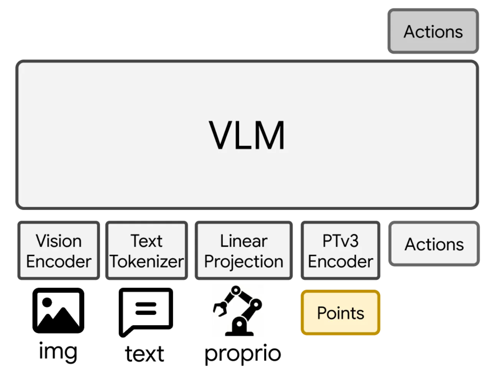
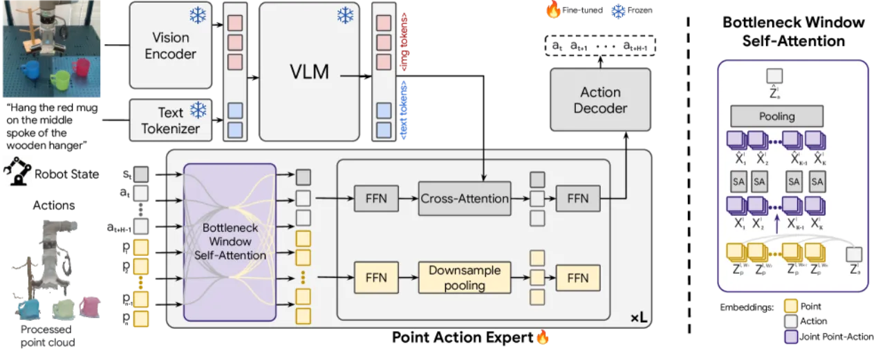
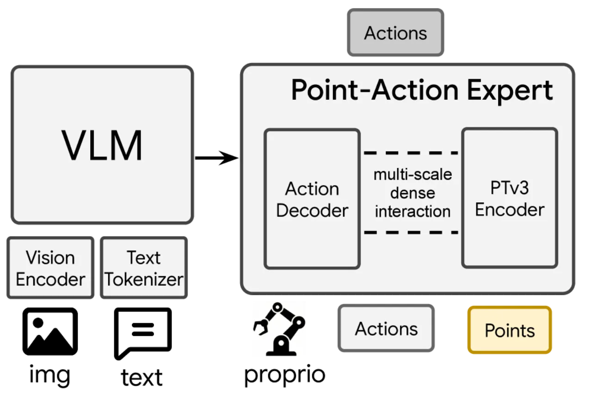
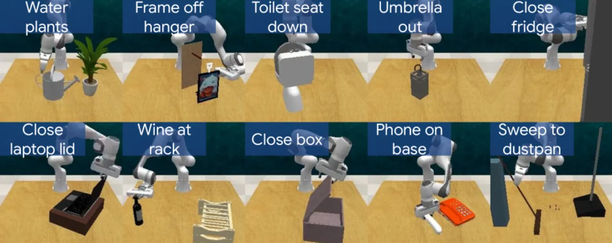
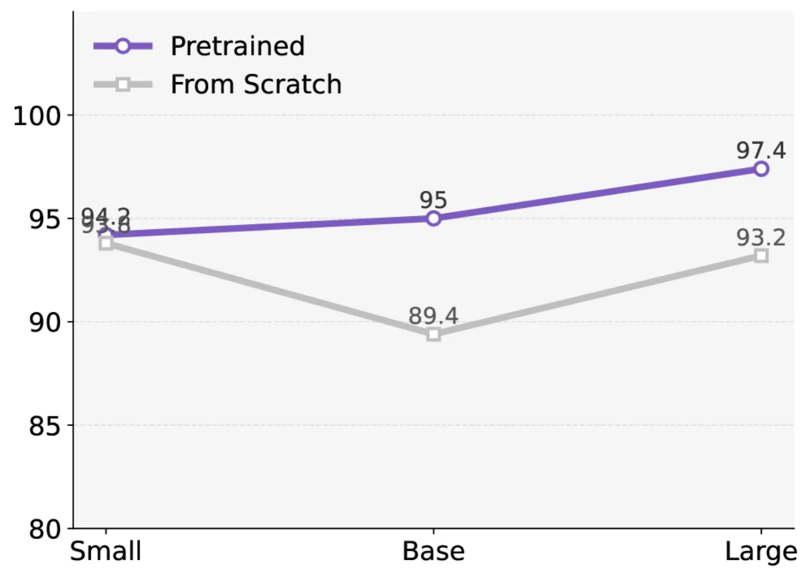
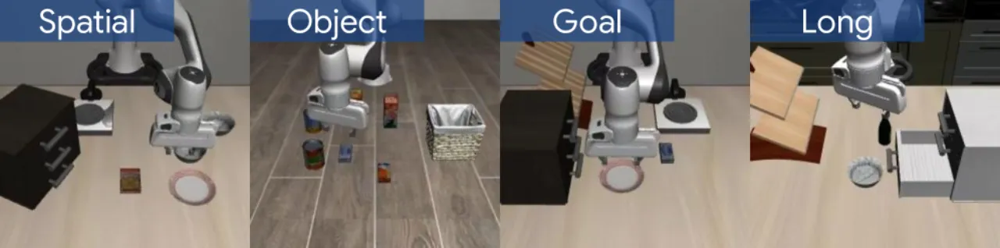

PointACT 将点云（point cloud）三维几何表示深度融合进视觉-语言-动作模型（VLA）的动作解码阶段，通过分层 bottleneck 窗口自注意力机制实现多尺度的"点云特征 ↔ 动作 token"细粒度交互，在 RLBench 和 LIBERO 基准上超越了当前最优的 2D 与 3D 方法，并在真实机器人上验证了其有效性。
当前最先进的 VLA 模型几乎全部依赖二维视觉表示，这严重限制了其对精细几何与空间关系的推理能力。
"the physical world is inherently three-dimensional, while most state-of-the-art VLAs rely on 2D image representations."
现有的将三维信息引入 VLA 的尝试存在两类明显不足：

PointACT 采用双系统架构（dual-system）：冻结的 VLM（Qwen2.5-VL）负责高层语义理解，可训练的 PointACT 动作专家（action expert）通过多尺度 Bottleneck 窗口自注意力机制将 Point Transformer v3（PTv3）各层的分层几何特征与动作 token 进行深度交互，最终预测机器人动作。

策略在多模态观测下预测未来 H 步动作：
A_t = π_θ(I_t, P_t, s_t, L)
其中 I_t 为多视角 RGB 图像，P_t ∈ ℝ^(N_P×6) 为三维点云（XYZ + RGB），s_t 为本体感受状态，L 为自然语言指令。
将点云划分为 K 个空间窗口。对每个窗口 k，动作 token 广播拼接至该窗口内点 token，进行联合自注意力：
X_k^l = [Z_p^{l,W_k}; Z_a^l]，X̂_k^l = Self-Attn(X_k^l)
动作 token 跨窗口平均聚合局部上下文：
Ẑ_a^l = (1/K) Σ_k X̂_{k,a}^l
再通过交叉注意力融合 VLM 嵌入：
Z̄_a^l = Cross-Attn(Ẑ_a^l, Z_vlm)
该流程在 PTv3 各分层阶段重复，从粗到细提取多尺度几何线索。关键设计：动作 token 充当"bottleneck"，既能感知局部几何细节，又保持全局语义一致，避免了将大量点云 token 直接暴露给 VLM 带来的干扰。
用于 LIBERO 等连续控制任务，动作 chunk 大小 H=16，使用 L₂ 损失：
L_reg = (1/H) Σ ‖a_i − a_i*‖₂²
用于 RLBench 关键帧预测，工作空间离散化为空间 bin，使用交叉熵损失：
L_cls = −Σ_k Σ_b y_{k,b} log(ŷ_{k,b})

在 RLBench（10 任务）、LIBERO（4 套件）仿真基准及真实机器人平台（SO-100 和 UR5）上与当前最优方法（包括 π₀、GR00T-N1.5、EO1、ACT3D、3DLotus 等）进行全面对比。

| 方法 | LIBERO-Spatial | LIBERO-Object | LIBERO-Goal | LIBERO-Long | LIBERO 均值 | RLBench 均值 |
|---|---|---|---|---|---|---|
| OpenVLA | 84.7 | 88.4 | 79.2 | 53.7 | — | 41.0 |
| π₀ | — | — | — | — | — | 55.0 |
| ACT3D | — | — | — | — | — | 64.5 |
| GR00T(arch) + Point | 92.0 | — | — | — | — | 69.7 |
| EO1（复现） | 91.8 | — | — | 85.6 | 93.1 | 73.2 |
| PointACT（本文） | 97.4 | — | — | 90.6 | 96.0 | 82.3 |
| 任务 | EO1 | PointACT |
|---|---|---|
| Phone on base | — | 99 |
| Umbrella out | — | 99 |
| Wine at rack | — | 90 |
| Sweep to dustpan | — | 59 |
| Water plants | — | 40 |
| 均值 | 73.2 | 82.3 |

| 消融配置 | LIBERO-Spatial (%) | RLBench (%) |
|---|---|---|
| EO1 baseline | 91.8 | 73.2 |
| EO1 + Point（Monolithic） | 94.0 | 18.6 |
| GR00T(arch) baseline | 87.0 | 50.8 |
| GR00T(arch) + Point（Dual-system 粗粒度） | 92.0 | 69.7 |
| 多尺度直接拼接（K=64, 128 tokens） | — | 65.2–65.6 |
| 无图像条件（仅点云） | 94.2 | 79.8 |
| PointACT（完整） | 97.4 | 82.3 |
消融关键结论：

| 任务 | π₀ | GR00T-N1.5 | PointACT |
|---|---|---|---|
| SO-100 机械臂（每任务 10 次试验） | |||
| Put Banana In Plate | 10/10 | 8/10 | 10/10 |
| Put Sock In Drawer | 2/10 | 5/10 | 9/10 |
| Open Microwave | 7/10 | 5/10 | 8/10 |
| 任务 | π₀ | GR00T-N1.5 | 3DLotus | PointACT |
|---|---|---|---|---|
| UR5 机械臂（每任务 10 次试验） | ||||
| Stack Yellow Cup | 0/10 | 0/10 | 7/10 | 7/10 |
| Close Drawer | 9/10 | 9/10 | 2/10 | 7/10 |
| Put Fruit in Plates | 0/10 | 0/10 | 0/10 | 4/10 |
PointACT 在"Put Sock In Drawer"任务上将成功率从 π₀ 的 2/10 提升至 9/10，充分体现了精细三维感知对复杂操作任务的价值。在 UR5 实验中，PointACT 在杯子堆叠上与 3DLotus（纯几何方法）持平，但在关抽屉任务上大幅优于 3DLotus（7/10 vs 2/10），体现了 2D 语义与 3D 几何混合的鲁棒性。
部分视角的局限性限制了对空间关系的完整理解，尤其在物体被遮挡时模型难以准确估计目标位置。作者指出此类失败需要多视角图像集成（multi-view integration）来解决。对应案例：Water plants（40% 成功率）任务中浇水壶与植物的位置关系判断困难。
"Models lack reactive recovery from execution errors or perturbations."——模型无法从执行错误或外界扰动中主动恢复，一旦中间动作出现偏差，后续动作难以纠正。作者将改进失败恢复能力列为未来工作方向。
当操作需要通过工具间接施力时（如扫把→簸箕的接触几何），模型难以建模精确的接触力学，对应 Sweep to dustpan（59% 成功率）任务表现偏弱。
作者在结论中提到"improving robustness under noisy point observations"为未来工作方向，暗示当前模型对传感器噪声（如透明/反光物体的深度缺失）较为敏感。UR5 实验中关闭透明抽屉的案例（Close Drawer）也间接体现了这一挑战，但通过 2D 视觉特征部分弥补了点云缺陷。
当前使用的 PTv3 预训练权重来自建筑级场景数据，与桌面操作任务存在显著域差异（domain gap）。作者明确将"scaling point-based pretraining on robot datasets"列为重要的未来工作，以提升特征迁移效果，尤其对大容量模型优化帮助更大。